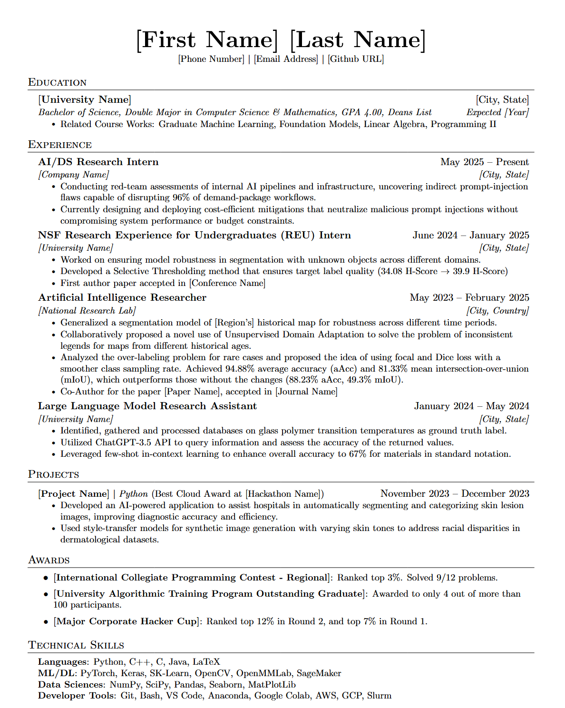
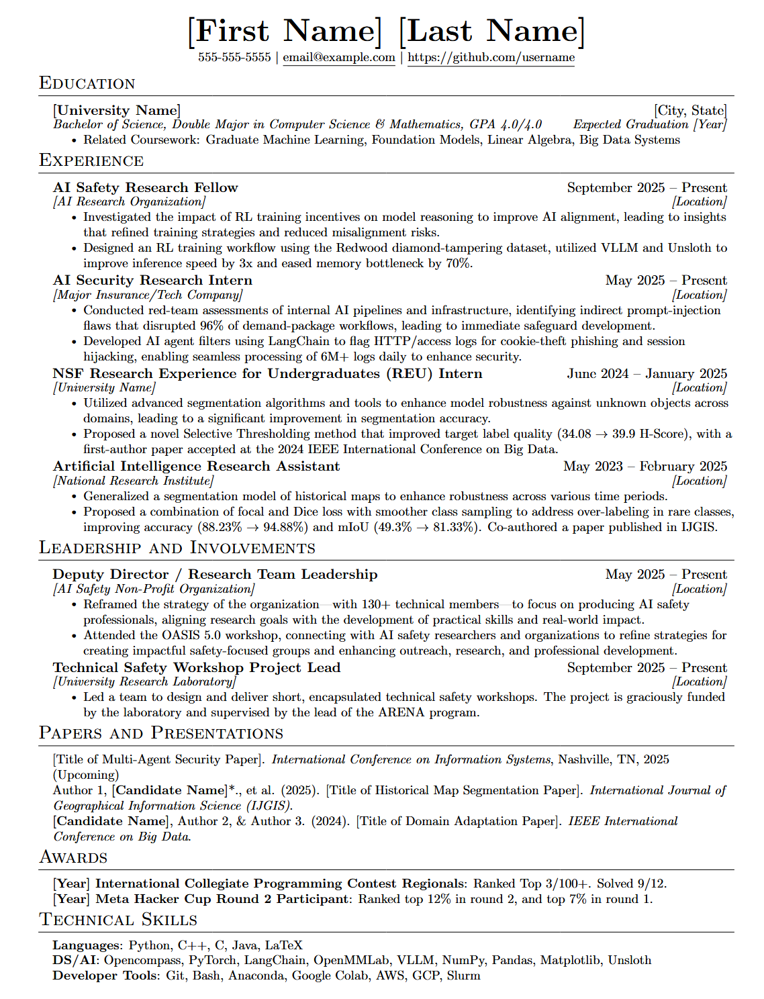

2025/2026 AI Safety Fellowship Application Experiences and Results
I will document my experiences applying to various AI safety research fellowships for this year. I will try to be as detailed as possible, but I might have forgotten some details. I hope this blog will not be seen as a brag, but rather an unbiased documentary aimed to help people understand more about the AI safety fellowship and what the process looks like.
My background
I’ll maybe add more information on my background later, but I think you can infer most information from the resume.
References
I had two references:
(1) Manager from my summer internship at an insurance company where I did red teaming research.
(2) Professor with whom I did a REU research in my freshman year, with a first-author paper produced in IEEE conference (non-safety).
I had great relationships with both references, and both were more than happy to write strong references for me.
Resume
I used 2 resumes across applications. The first one was for SPAR:

I updated my resume significantly afterwards, and all other fellowships are applied using this resume:

Programs I applied to
Supervised Program for Alignment Research (SPAR)
Note: This is for the 2025 fall cohort.
Format: Online
Paid: No
References: Not Required
Offer: Yes
Time Spent: 8hr (initial application) + 1hr (interviews) = 9hr
The format for SPAR is quite simple. On their website, you can apply for various projects. Each project has specific questions, and you have to write an essay for each prompt. Apart from project-dependent questions, there is also a general application you have to fill out.
I applied to 5 of them, of which 2 did not require any project questions. If the mentor is interested in you, they will ask to arrange a short, 30-minute interview. Both of my interviews focused on the project and the content I wrote for the mentor questions, so I would suggest spending some time working on those essays.
Interestingly, I originally received an email saying I was rejected from all projects. But the two mentors I interviewed with personally contacted me afterwards, asking whether I got in SPAR, and they were surprised that I didn’t, as there seemed to be a misunderstanding of the selection mechanism. After talking to Kairos, I was able to successfully participate in SPAR!
The acceptance rate for this specific cohort was around 18%, although it’s highly project-dependent. My recommendation is to apply for several (~5), and don’t just pick ones with famous mentors!
ML Alignment & Theory Scholars (MATS)
Format: In-person
Paid: Yes
References: Required (2)
Offer: No (1 work test)
Time Spent: 4hr (general application) + 13 hr (Stream specific applications) + 2hr (CodeSignal) + 3hr (Work test) = 22hr
MATS is likely one of the most famous AI Safety research programs out there, with an acceptance rate of around 5~8%. (This cohort had an 8% acceptance rate, I heard.)
There is a general application you need to do (as usual), but unlike SPAR, you apply to streams instead. You apply to mentors that you are interested in, and either come up with a project during the application or discuss with the mentor after acceptance.
(I highly recommend spending some time on the general application, because most fellowships ask similar questions, and it’s mostly copy-pasting your polished version from MATS.)
After the initial applications, you will get a CodeSignal ICA assessment that is unproctored (but doesn’t allow AI). I would recommend spending some time learning to write OOP and contained code, as the ICA assessment focuses on refactoring and changing previous implementations, which can be quite chaotic if you don’t write code that’s easy to refactor. I was able to ace the test (600/600) with some time to spare. The average MATS applicant has a Codesignal score of 540, but I would not worry too much if you didn’t get a good score. I know people who got in with only 500 or even 480, and most get rejected with 600/600, so many mentors don’t weigh the score heavily.
After the CodeSignal, mentors will start sending out interview or work-test invites. I got a work test from a mentor I didn’t apply to (apparently, they thought I was a good fit) on creating a research proposal, but I didn’t get an offer in the end.
Center for Human-Compatible Artificial Intelligence (CHAI)
Note: This is for the 2026 summer intern application.
Format: In-person
Paid: Yes
References: No
Offer: ?
Time Spent: 1hr (initial application) + 2hr (OA) = 3hr
Don’t have much to say about CHAI yet, as it’s still ongoing (though I should have gotten a next-round invite ages ago…).
They do not use CodeSignal for their OA. Instead, they use another platform with 3 problems to choose from: MCTS, Decision Tree, and BPE. I personally chose the problem to implement a variant of BPE, and I think it wasn’t too difficult as long as you know how BPE works. I scored 600/600 on the OA. I’ve heard that MCTS is very hard, and the Decision Tree one was pretty tricky to implement. Basically, do BPE!
I do want to share that they accidentally sent everyone the 2nd-stage email, and then, after an hour, sent a rejection email to those who didn’t actually get into the second round. Weirdly, after a week, they sent another rejection email! I know some people who got pretty upset about this, and I think they could’ve done better here.
Mentorship for Alignment Research Students (MARS)
Format: Online (With first two weeks at Cambridge)
Paid: No
References: No
Offer: No (2nd round)
Time Spent: 1hr (Initial application) + 2hr (2nd round project questions) = 4hr
MARS is quite similar to SPAR, but they first use an initial application to filter out people, then do the project-specific 2nd-round application. This design was a bit annoying because none of the projects were actually interesting to me!
Also, in the second-round rejection email, they messed up, so you can see every single participant who was rejected that round. Definitely didn’t give me the best impression, but I also know people who got great offers from the program.
Constellation Astra
Format: In-person
Paid: Yes
References: Required (2) -> Sync with MATS
Offer: YES
Time Spent: 3hr (initial application) + [2hr (CodeSignal)] + 7hr (Work test) + 5hr (Research Assessment) + 0.5hr (Interview) = 17.5 hr (15.5 excluding CodeSignal)
Astra is also stream-specific (though streams are not per-mentor like MATS), allowing you to choose tracks like field building, empirical, security, and more (I only applied to the empirical track). The good thing about Astra is that they collaborate with MATS, so you can reuse the same codesignal score and references!
For the empirical track: After the application (and CodeSignal), there will be a 5-hour research assessment, where they will give you a research topic, and you will have to come up with hypotheses, conduct experiments, and create a 30-minute presentation all within the timeframe.
At the same time, you might also get work tests from certain streams. For example, I got a work test from Redwood and UK AISI, which are again prompts to write an essay on. It can be asking your thoughts on a specific phenomenon/agenda, or thinking of research questions.
Getting a work test is not required to get an interview. I got an interview with DeepMind (specifically with David Lindner) without any prior work tests, so I assume this is also mentor- or org-dependent.
The interview with GDM was 30 minutes. We started off with a technical coding question, where he pulled out a Colab notebook with a question that I had to solve. The question doesn’t require any specific algorithmic knowledge and instead tests your general problem-solving skills. I didn’t actually solve it because we only had like 7 minutes, but I verbally explained my solution, and he seems satisfied with it. After that, he started asking me about a specific research proposal I mentioned in my application, which I honestly haven’t thought of in a while (big blunder!).
I felt horrible after the interview because I thought I didn’t do well, but it turns out it was enough to get accepted by Scott Emmons! This is the offer I ended up accepting, as I wanted to return to Constellation and work at Berkeley.
ERA
Format: In-person
Paid: Yes
References: Required (2) -> Only asks after passing the first round
Offer: Yes
Time Spent: 2hr (initial application) + 0.5hr (First interview) + 1hr (second interview) = 3.5hr
ERA’s application process is my favorite one by far.
There is first an initial application to filter out people, and then they will send out an asynchronous, online interview. Basically, you will get a prompt, 30 seconds to think, and 5 minutes to record your response. You can re-record once if you mess up, but I didn’t use any re-recordings.
After the first interview, there is a final 1-hour interview round (with a real person!). I interviewed with Dave Banerjee from IAPS. It was a pretty difficult interview with a lot of abstract questions, and I would say it requires a solid understanding of the AI Safety landscape and understanding X-risk issues.
Overall, this was my favorite process so far. The questions challenged me to think more deeply about my perspectives on AI Safety, which was super valuable to me.
I believe the rates were something like 20% for the second round, 3% for the final round, and 1% for the offer. Pretty cool that I got accepted!
London AI Safety Research Labs (LASR)
Format: In-person
Paid: Yes
References: No
Offer: (Declined final round interview after Astra acceptance)
Time Spent: 2hr (initial application) + 2hr (OA) = 4hr
The initial application is quite standard, so I won’t go into much detail.
After passing the initial stage, there is a CodeSignal MLE core assessment. This OA is evil. There are 10 MCQs, 1 algorithmic coding test, and 2 ML coding tests. The MCQs are on fundamental ML knowledge (PCA, F1 score, SVM, etc), the algorithmic coding test was around a lc medium, and the 2 ML coding tests were also on classical ML stuff (Bayesian, Gaussian Kernel, etc.)
I was shocked that LASR would give an OA that’s this fundamental, and I struggled a lot on this OA, essentially guessing a lot of the MCQs. I did get a pretty good score in the end (544/600), and I believe you can get into the next stage even with a score around 400 or 450, as the OA is really hard for everyone.
I got a final interview invite shortly after, but I declined after getting my Astra acceptance.
Sidenote: I’m not a big fan of how LASR operates. You have to get accepted first, form a team, and then they pair you with a project from their mentors. The issue is that you have no idea if there will be a project you are actually interested in! This seems pretty risky if you have a clear agenda or topic you want to work on.
Other Programs I didn’t apply to
These are programs that I didn’t end up applying to, but have heard good things about them and you should consider applying if they are open!
PIBBSS
Format: In-person
Paid: Yes
References: No
Anthropic Fellows
Format: In-person
Paid: Yes
References: Yes
Pivotal
Format: In-person
Paid: Yes
References: Yes
Future Impact Group (FIG)
Format: In-person
Paid: Yes
References: No
AI Safety Camp
Format: Online
Paid: No
References: No
XLab Summer Fellow
This is a summer position!
Format: In-person
Paid: Yes
References: ?
I’ll add more stuff if something comes up in my mind, but I’ll keep it as it is for now. If you have any questions, feel free to shoot an email / ask me on discord (id: yeedrag)!